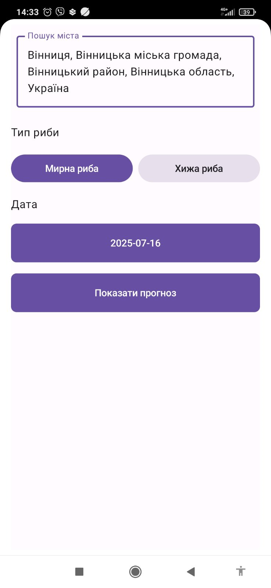
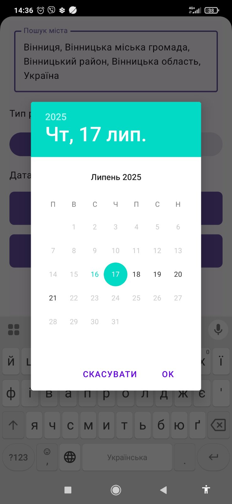
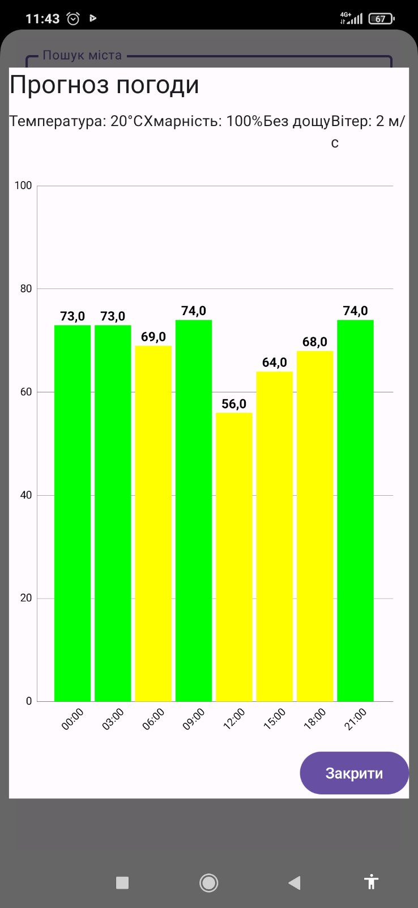

Точний прогноз кльову риби у твоєму смартфоні
Завантажити FishBeat
🔒 Бета-версія
Щоб отримати доступ, надішліть свій email на
energetik461954@gmail.com
або у Telegram
@MaksymKorol15.
Після додавання отримаєте особисте посилання на Google Play.
⏳ Реліз незабаром
Офіційний реліз FishBeat — скоро! Слідкуйте за новинами та отримайте gift-версію, якщо встигнете стати тестувальником.
Можливості додатку
- Прогноз кльову по містах та водоймах
- Вибір виду риби і дати
- Графік активності риби по годинах
- Зручний пошук локації
- Детальна погода для рибалки
Як користуватись?
- Встановіть додаток через Google Play
- Обирайте місто або водойму
- Виберіть вид риби та дату
- Виберіть дату
- Натисніть “Показати прогноз”
- Дивіться графік, ловіть більше риби!
Скріншоти FishBeat



FAQ
- Як отримати gift-версію? — Надішліть email, і після релізу отримаєте інструкцію для активації безкоштовної версії назавжди.
- Чи буде додаток платним? — Для перших 20 тестувальників — безкоштовно на завжди!
- Де дізнатись новини? — На цьому сайті, або пишіть у Telegram.